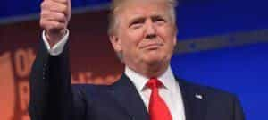

Libertas is a young bard traveling along the endless road to self-improvement and recounting his adventures. You can follow him on Twitter.


Happy New Year, Return Of Kings! Now having said that, the festivities are over and it’s incumbent on us to look forward, not back. We won great victories last year, no question about it, but we need to think ahead if we want to keep winning. As Robert Greene advised in his 48 Laws of Power, the past must constantly be slain. Never try to coast on your laurels.
It would now behoove us to remember that we won an operational victory in 2016. It was no doubt decisive, but its full extent was that it merely gave us the opportunity to win big on the strategic level. If we don’t strike boldly into the enemy interior, what use was overrunning the forts that guarded our opponents’ frontiers? Unfortunately, Republicans have a habit of letting golden opportunities go to waste, preferring minor tactical victories rather than massive offensives into enemy territory when it’s open and ripe for attack.
The beaches have been stormed. Now what?
This is the danger above all others that Donald Trump must avoid. He will no doubt be tempted, as we’re already seeing, to move elsewhere, to squander his political capital on matters of secondary importance. This can be discerned when you hear that “Trump’s foremost campaign promise was to repeal and replace Obamacare.”
No, Donald Trump’s foremost campaign promises were immigration (ending illegal and reforming legal immigration to put American citizens and workers first), ending a bad trade regime to bring back jobs, and stopping a warmongering foreign policy.
If Trump doesn’t make significant inroads on those issues, I and most of you also will consider his presidency to have been a total failure.
So while I’ve been largely encouraged by some of the things Trump’s done (kicking David Koch off his golf course was good optics), you can never be too cautious when it comes to the swamp that is Washington. Donald Trump should not allow himself to make the mistake of getting bogged down into a fight not of his own making. In this regard the members of his own party (nominally) are often more dangerous than the opposing Democrats. The house GOP trying to gut the independent ethics committee as soon as the new Congress took office was an early warning sign, but Trump’s prompt response that forced them to back down was an encouraging one, suggesting that he’ll be able to rein in his own party.
To put it bluntly, there is a big danger that his own party will try to get him mired in stupid fights for the benefit of “Conservatism, Inc.,” rather than his own agenda to make America great again. Obamacare needs to be repealed and replaced, but the speed at which they’re attempting to do this without a clear replacement could prove troublesome (Trump’s recent tweets about the monstrosity of Obamacare being the Democrats’ pet are right on the mark). They must do it the right way, and at any cost, Trump should avoid a protracted and bitter healthcare fight, the very thing that crippled Obama domestically for the remainder of his presidency.

Walking into those traps that result in at best a Pyrrhic victory must be avoided at all cost. The big fight should be saved for immigration, trade, jobs, etc. If the country (minus California) wanted to repeal Obamacare and lower taxes, it could have voted for any other Republican candidate. That agenda wasn’t what gave Trump his unique appeal. It wasn’t why Pennsylvania, Michigan, and Wisconsin voted Republican for the first time in 30 years. Trump knows this, but it’s an open question whether the GOP establishment does. Will they simply attempt to return to their old ways? Will they even side with the left against him if he goes off the traditional reservation on things like immigration?
Bigger danger lies in the realm of foreign policy, where we’re already starting to see the globalist bipartisan consensus establish itself against Trump. It seemed likely when the anonymous allegations of “Russian hackers” spread their way through the fake news media some weeks ago, but now President Obama and members of Trump’s “own party” have begun to try to box him in with foreign policy, at least in regards to Russia. This effort has been spearheaded by the Senate’s two most intransigent warmongers, John McCain and Lindsey Graham, who may use the specter of “muh Russian hackers” to attempt to extract concessions from Donald Trump.
When 2016 began, I wrote that it would be a year of profound political realignment. What’s most amusing to me is that part of that realignment looks to consist of a burgeoning alliance between leftists and one of their supposed traditional enemies, neoconservatives. We saw the beginnings of this when Hillary Clinton got virtually unanimous neocon support during the campaign and she made overtures to them throughout, but in the wake of the election and the Russian hacking hysteria, the alliance seems to have crystallized. Cognitive dissonance over Trump (less formally known as Trump Derangement Syndrome) will also assure that many of the Democrats’ “progressive” base will be fine with a neocon alliance because “Trump = bad.”
How powerful this blooming alliance becomes remains to be seen. The first test will be Rex Tillerson’s nomination for Secretary of State. He has come under fire because he was once seen drinking champagne with Putin. Only four Republicans need defect to halt the nomination. I suspect this won’t happen, as the neocons would need to save face with their own party to get support on other initiatives, but this trend is well worth watching on other, less public issues. The foreign policy establishment is dead-set against Trump pursuing a realist, America first stance on the world stage. I’m 99% certain they’re secretly enraged that Trump correctly doesn’t believe that Ukraine and Syria (always in Russia’s sphere of influence) are worth enmity with the Russians over.
This leftist/neocon alliance probably also includes some prominent people in the so-called “deep state,” personified by the intelligence agencies, which the new Senate Minority Leader, Chuck Schumer, is saber-rattling with.
https://www.youtube.com/watch?v=m_cxbPUo5XA
Safe to say, any information percolating through leftist/neocon outlets, especially citing “intelligence agencies,” must be taken with extreme skepticism, and we must also be on guard against Trump being influenced by such hysteria in any way (he’s holding up well so far).
The time ahead is one of great promise, but there are also a great many dangers. To prevent the swamp from draining Trump instead of the other way around, Trump’s base will have to be continuously engaged, focused on strategic priorities, watching the new subversive alliances like hawks, and yes, begin to kick the useless appendages like McCain and Graham out of power.
Let’s prepare for another revolution in 2018.
Read More: Equality Now: End The Female Free Ride